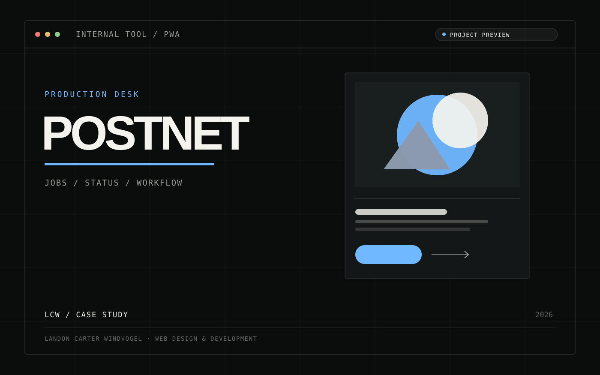

PostNet Production
A job-tracking PWA that follows sticker and T-shirt flex jobs from intake to collection across a branch network.
- Role
- Design & development
- Stack
- Vite, vanilla JS, Supabase
- Focus
- Workflow, realtime, PWA
- Status
- Live

The challenge
Print jobs pass through many physical stages, handled by different people at different branches. Everyone needs to see what is next, what is blocked and what has to go back for correction, without having to ask.
The direction
Two workflows modelled as explicit stages. Stickers run from Incoming through Printing, Drying, Contour Cutting, Weeding and Quality Check to Ready and Collected. T-shirt flex jobs swap in Cutting and Heat Press. The interface is built around the next action, not the data.
The build
- Vite with vanilla JavaScript ES modules. Deliberately no framework.
- Supabase for auth, Postgres and row-level security, with Realtime keeping screens in sync.
- Branch-aware: Plettenberg Bay, Knysna, Waterside and Sedgefield.
- Return-for-correction workflow, material stock tracking, staff management and in-app notifications.
- Delivered in seven sprints, from foundation to a full QA pass, and deployed on Netlify.